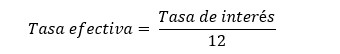
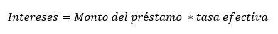

El esquema de pago tipo Bullet consiste en que en cada período solo se pagarán intereses y es hasta el último período que se paga el monto del préstamo más el monto de los intereses generados en el período.
Para construir la tabla de amortización bajo este esquema es necesario calcular la tasa de interés efectiva, que se calcula dividiendo la tasa de interés entre 12. 
Después calculamos el monto de los intereses que estaremos pagando cada periodo, para obtener dicho dato multiplicamos el monto del préstamo por la tasa efectiva: 
Una vez que calculamos los intereses, llenamos la tabla para todos los períodos de tal manera que el monto del pago y de los intereses será el mismo, pero en el último periodo sumaremos el monto del préstamo, liquidando así la deuda.